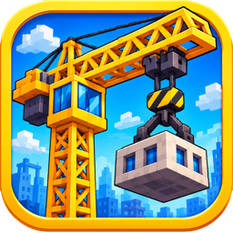

Tower Crane: Block Master
Swing. Drop. Stack. Don't get fired.
Need help?
Write to ertugrul.aydogan@hotmail.com. Please add your iPhone model, iOS version and the game version (shown at the bottom right of the main menu). We usually reply within a few days.
Frequently asked questions
How do I play?
Move the swinging block with the two levers, pull the yellow handle to drop it and try to land it right in the middle of the floor below. Dropped blocks fill the Boss's temper meter; if it fills up, you're fired. The S.O.S. Handbook in the cabin explains everything else.
I bought something but didn't get it.
Open the Shop and tap Restore Purchases. Make sure you're signed in with the same Apple ID you used to buy. If it still doesn't appear, write to us with the date of the purchase.
How do I get a refund?
Refunds are handled by Apple. Visit reportaproblem.apple.com.
How do I remove ads?
Any "No Ads" item in the Shop turns off banner and interstitial ads. Watching a rewarded video to continue stays optional.
Will I lose my progress if I delete the game?
Yes. Progress is saved only on your device. Purchases that don't run out (like lifetime No Ads) can be brought back with Restore Purchases; used cards and continues cannot.
The leaderboard doesn't show my score.
Leaderboards use Game Center. Check that you're signed in under iPhone Settings › Game Center and that you have an internet connection.
The daily reward won't open.
The daily reward needs an internet connection to check the date. Connect and open the game again.
Kule Vinç: İnşaat Ustası
Salla. Bırak. Diz. Kovulma.
Yardım mı lazım?
ertugrul.aydogan@hotmail.com adresine yaz. iPhone modelini, iOS sürümünü ve oyun sürümünü (ana menünün sağ altında yazar) eklersen işimiz kolaylaşır. Genellikle birkaç gün içinde dönüyoruz.
Sık sorulan sorular
Nasıl oynanır?
Sallanan bloğu iki kolla kaydır, sarı tutamacı çekerek bırak ve alttaki katın tam ortasına oturtmaya çalış. Düşen bloklar müteahhidin sinir barını doldurur; dolarsa kovulursun. Kabindeki S.O.S kitabı gerisini anlatıyor.
Satın aldım ama ürün gelmedi.
Mağazayı aç ve Satın Alımları Geri Yükle'ye dokun. Satın aldığın Apple kimliğiyle giriş yaptığından emin ol. Yine gelmezse satın alma tarihini yazarak bize ulaş.
Para iadesi nasıl alırım?
İadeleri Apple yürütür: reportaproblem.apple.com.
Reklamları nasıl kaldırırım?
Mağazadaki herhangi bir "Reklamsız" ürün banner ve geçiş reklamlarını kapatır. Devam etmek için ödüllü video izlemek isteğe bağlı kalır.
Oyunu silersem ilerlemem gider mi?
Evet. İlerleme yalnızca cihazında saklanır. Bitmeyen ürünler (sonsuz reklamsız gibi) Satın Alımları Geri Yükle ile geri gelir; kullanılmış kart ve devam hakları gelmez.
Skorboardda skorum görünmüyor.
Skorboard Game Center kullanır. iPhone Ayarlar › Game Center'da giriş yaptığını ve internete bağlı olduğunu kontrol et.
Günlük ödül açılmıyor.
Günlük ödül tarihi kontrol etmek için internet bağlantısı ister. Bağlanıp oyunu yeniden aç.